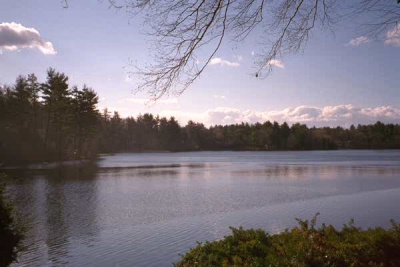

|

Photograph © 1997 by Ralph Corso
The Lake Garda Improvement Association is a Chartered co-terminous municipality located in the Borough of Unionville in the Town of Farmington and in the Town of Burlington in Central Connecticut, about 16 miles West of Hartford. The Association was created by Special Act of the Connecticut General Assembly and approval of the members in 1949. It currently has about 455 property owners in the area around Lake Garda.
The Association manages the lake for water quality and weed control and maintains three private beaches and about one and a half miles of private roads which provide direct access to the water. The Association is also active in municipal affairs in the Towns of Farmington and Burlington and the Officers and Board Members routinely attend public meetings on issues that concern the membership. On February 11, 1997 the Association completed the acquisition of the Lake and Dam site, as well as two additional parcels of land for beach purposes, from the Lake Garda Water Company. These acquisitions will allow the Association to go forward with the dam repairs required by the State Department of Environmental Protection. The dam repairs and improvements to the adjoining beach and parking area are scheduled to begin in the Fall of 1998.
The Officers and Directors meet on the fourth Monday of each month and the Association holds two general membership meetings each year. Officers are elected for one year terms and Directors are elected for 6 year terms at the October meeting. In April the membership reviews and votes on the annual budget and expenditures. Association taxes are currently $150.00 per year per property owner with a special tax relief program for qualified elderly residents. Taxes are due in May in one installment.The Lake Garda area was developed by an Italian immigrant named Harry Battistoni. He created several lakes in the area and named them for Italian lakes near his birthplace. You can visit the original Lake Garda at http://www.gardalake.it/.
Lake Garda Location Map
(An Interactive Map from Vicinity Corp.)|
|
|---|
Hartford Courant Community Profile
By Ken Byron
This story ran in The Courant on November 23, 1997
For more information on the Lake Garda Improvement Association contact:
John Benz Fentner, Jr.
12 Washington Circle
Unionville, CT., 06085
Tel: 860-675-8489
FAX: 860-673-5480
Click on the froggie to EMail your Questions, Comments and Suggestions.